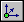

Cable command bar
- Dialog Box Options
- Return
-
Returns you to the Assembly environment.
- Conductor Step
-
Selects the conductors to be included in the cable.
- Path Step
-
Defines the path along which the cable runs.
- Properties Step
-
Selects the properties used to define the cable.
- Preview/Finish/Cancel
-
This button changes function as you move through the feature construction process. The Preview button shows what the constructed feature will look like, based on the input provided in the other steps. The Finish button constructs the feature. After previewing or finishing the feature, you can edit it by re-selecting the appropriate step on the command bar. The Cancel button discards all input and exits the command.
- Path Step Options
- Create Path
-
Specifies that a new path will be created for the cable to follow.
- Use Existing Path
-
Specifies that the cable will follow an existing path.
- Path Tangency
-
Adjusts the endpoints of the path to control tangency.
- Circular Cutout Locate
-
Allows you to select a cylindrical face on a cutout through which the path can run.
- Keypoint Locate
-
Allows you to select keypoints through which the path can run.
- Redefine Point
-
Allows you to redefine the location of an existing point you select. You can use the Relative/Absolute option on the command bar to redefine its position relative to its current position or with respect to its absolute position in the document. You can type a new coordinate in the X, Y, or Z boxes, select a keypoint, click a point in space.
- Keypoints
-
Sets the type of keypoint on existing geometry you can select when defining the path.

Allows you to select any keypoint.

Allows you to select an x,y,z point in free space.

Allows you to select an end point.

Allows you to select a midpoint.

Allows you to select the center point of a circle, arc, square, or rectangle.
- Relative/Absolute Position
-
Specifies whether the value you type is relative to the point's current position or is based on the global origin of the document. The global origin is the point where the three default reference planes intersect (the exact center of the design space).
- X
-
Sets the position for the x axis.
- Y
-
Sets the position for the y axis.
- Z
-
Sets the position for the z axis.
- Deselect (x)
-
Clears the selection.
- Accept (check mark)
-
Accepts the selection.
- Selecting an Existing Path
- Select
-
Sets the method of selecting the path the cable should follow.
-
Single—Allows you to select one or more individual paths.
-
Chain—Allows you to select an endpoint connected set of paths.
-
- Setting Tangency Options
- Start
-
Specifies the end condition for the start end of the curve. You can specify whether or not the start point of the curve is tangent to an element you select, and the length of the tangent vector. Define the length of the tangent vector by dragging the tangent vector handle using the mouse or you can type a value.
- End
-
Specifies the end condition for the finish end of the curve. You can specify whether or not the start point of the curve is tangent to an element you select, and the length of the tangent vector. Define the length of the tangent vector by dragging the tangent vector handle using the mouse or you can type a value.
- Setting Wire Properties
- Material
-
Specifies the material for the cable.
- Properties
-
Displays the Properties dialog box so you can make changes to the properties for the cable.
- Other command bar Options
- Name
-
Displays the feature name. Feature names are assigned automatically. You can edit the name by typing a new name in the box on the command bar or by selecting the feature and using the Rename command on the shortcut menu.
How do I
Route a harness entity along a surfaceEdit the path of a electrical routing conductor
Construct a path through selected keypoints
Display Properties for a Harness Element
Create a wire
Create a cable
Create a wire harness bundle
Add a splice
Display Harness Elements
Create a harness component solid body
Delete a wire component solid body
Learn more
Creating the electrical routing manuallyCreating harness component solid bodies
Removing conductors
Look up more details
Path commandEdit Path Command
Path command bar
Route command
Route along Surface command
Route along Surface command bar
Show All Paths command
Wire command
Wire command bar
Show All Wires command
Hide All Wires command
Wire Properties Command
Cable command
Show All Cables command
Hide All Cables command
Bundle command
Bundle command bar
Show All Bundles command
Hide All Bundles command
Splice command
Splice command bar
Splice Properties dialog box
Assign Terminals dialog box (Splice)
Create Physical Conductor command
Delete Physical Conductor command
Show Physical Conductor command
Show All Physical Conductors command
Hide Physical Conductor command
Hide All Physical Conductors command
Show All Harnesses command
Hide All Harnesses command
Remove command (Electrical Routing)
PathFinder in electrical routing
Related Topics
Create a bundle across a spliceAdd a wire to a splice
Remove a wire from a splice
Change the splice location
Change splice properties